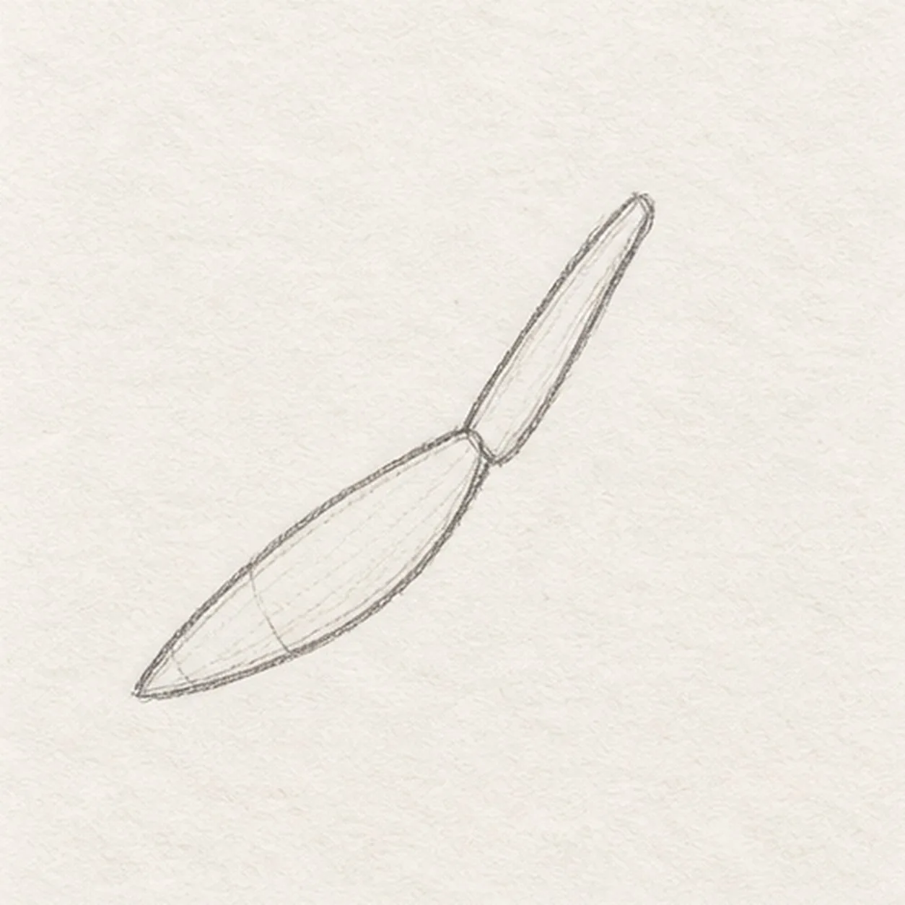
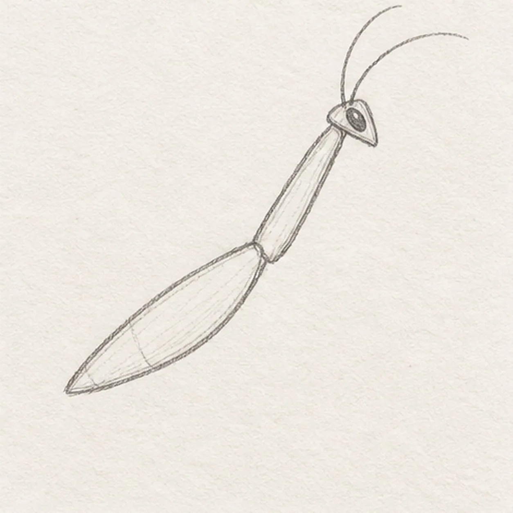
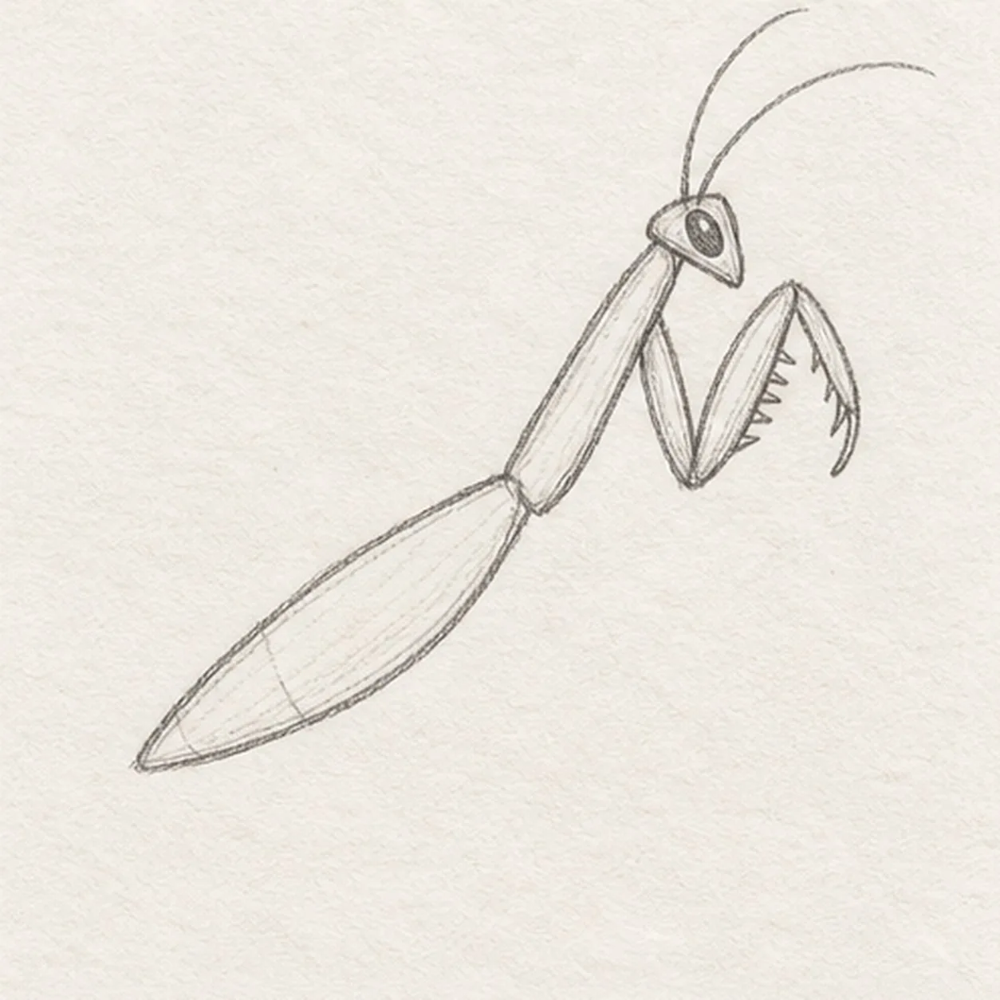
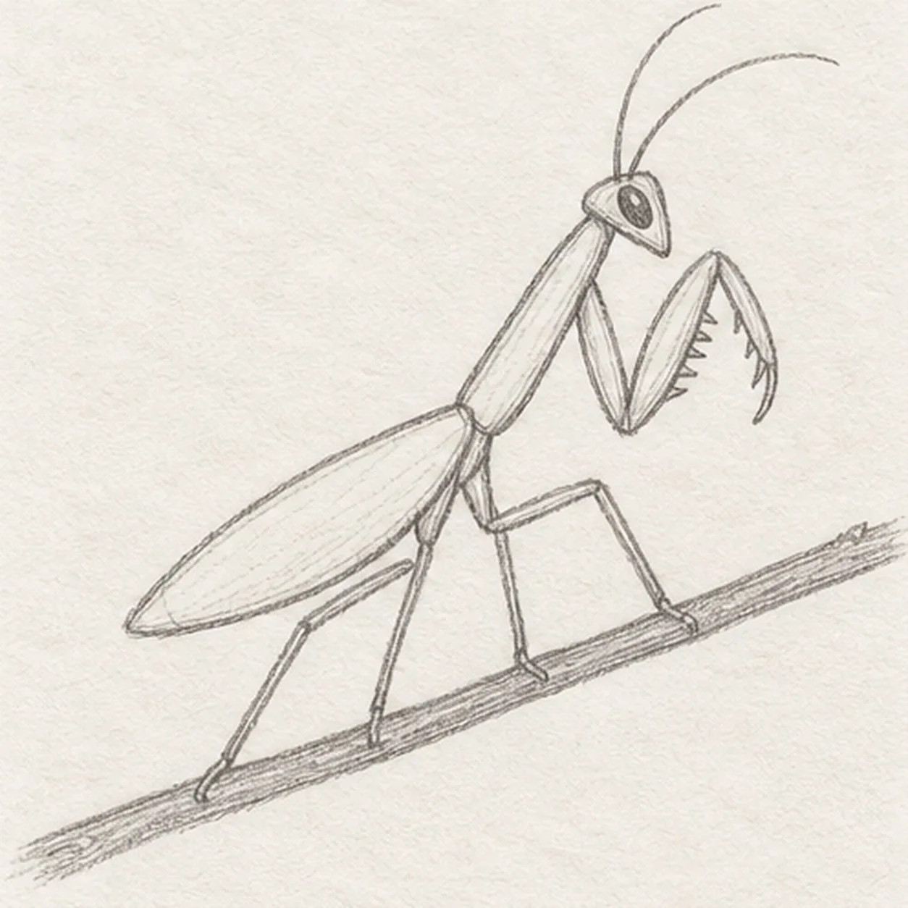
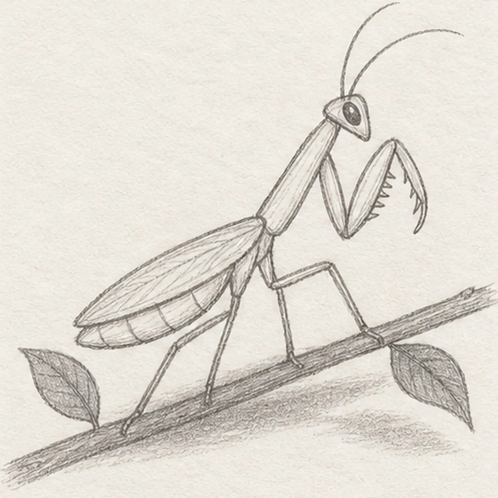

Pencil ready?
Let's draw a praying mantis
Treat this as one small practice round: build the subject lightly, notice the shapes, then darken only the lines that help the finished sketch.
-
01

Set the mantis body angle
Draw one long narrow thorax rising from lower left to upper right, then join its rear end to one gently curved abdomen that tapers to a soft point. Leave the front end open enough for the head and keep clear paper beneath both forms for the legs.
Sketch tip: Ghost the full diagonal twice before drawing. The thorax should stay slimmer than the abdomen, with one clean joint between them.
-
02

Turn the head and antennae
Attach a small rounded triangle to the front of the thorax and tilt its point slightly downward. Sweep exactly two thin antennae from the top corners, then place one almond-shaped near eye with a tiny open-paper highlight.
Sketch tip: Compare the open wedge between the head and foreleg area. Keep the two antennae light and let their curves separate as they rise.
-
03

Fold the grasping foreleg
From the front of the thorax, angle one visible upper foreleg section down and forward, fold its lower section back toward the head, and add a short row of inner spines. Let the far foreleg remain hidden in this clean side view.
Sketch tip: Check the sharp zigzag of the folded leg before adding spines. Short tapered marks should point inward without filling the open center.
-
04

Plant four legs on the twig
Attach exactly four long walking legs beneath the middle and rear body, bending each once at a clear knee. Draw one diagonal twig behind the feet so every foot meets its upper edge, stopping the twig line wherever a leg overlaps it.
Sketch tip: Trace each leg back to its body joint and compare the open triangles between them. Count four walking legs before drawing the twig through the remaining gaps.
-
05

Add wing, bands, and leaves
Lay one long leaf-shaped folded wing over the near abdomen, add exactly three short curved bands on the exposed rear section, attach exactly two simple leaves to open parts of the twig, and place one light broken graphite shadow beneath the mantis.
Sketch tip: Aim the wing toward the abdomen tip and stop it short enough to show three bands. Keep both leaves outside the leg gaps so the silhouette stays readable.
-
06
![Handmade graphite and restrained colored-pencil sketch of one side-view praying mantis angled upward on a warm-brown twig with one pale-olive thorax, one tapered abdomen, one triangular head, exactly two long antennae, one dark near eye with a paper highlight, one visible folded grasping foreleg with inner spines, exactly four long walking legs touching the twig, one muted-green folded wing, exactly three exposed abdomen bands, exactly two attached green leaves, visible paper tooth, and one broken graphite shadow](../assets/praying-mantis-on-a-twig-finished-v1.webp)
Shade the watchful mantis
Layer pale olive over the established body and five visible legs, deepen the folded wing and two leaves with muted green, warm the twig with brown, and reinforce the same broken shadow with graphite. Keep the two antennae, eye highlight, foreleg spines, and three abdomen bands visible without adding contours.
Sketch tip: Pull color lengthwise along each narrow form and leave small paper gaps at the joints. Count two antennae, one folded foreleg, four walking legs, three bands, and two leaves, then stop.
![Handmade graphite and restrained colored-pencil sketch of one open warm-cream crayon box in three-quarter view with muted-coral side panels, exactly five crayons rising at varied heights in red, orange, golden yellow, teal, and blue, one pointed tip per crayon, exactly one dark wrapper band per crayon, exactly two outward carton flaps, one blank oval front label, exactly two short front seams, exactly three small wear nicks, exactly two open-paper wrapper highlights, visible paper tooth, and one broken cool-gray ground shadow](../assets/open-box-of-five-crayons-finished-v1.webp)